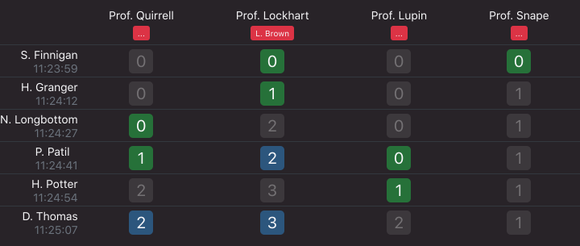

In verschiedenen Kursen stehen verschiedene Assistenten zur Verfügung. Studenten stellen sich in einem Kurs an, indem sie einen oder mehrere der verfügbaren Assistenten auswählen. Der jeweils erste Student kann von den von ihm ausgewählten Assistenten aufgerufen werden.
Während der Wartezeit kann jederzeit überprüft werden wie viele Studenten insgesamt noch vor einem anstehen und wie viele davon wiederum die jeweiligen Assistenten ausgewählt haben. Die Kombination der gewählten Assistenten kann jederzeit geändert werden.

Stehen im Labor bzw. Phantomsaal Bildschirme zur Verfügung kann dort eine Liste der aktuell anstehenden Studenten angezeigt werden.
Die Verwendung einer elektronischen Warteschlange bietet grundsätzlich die Möglichkeit die Wartezeit sinnvoll zu nutzen. So kann während des Anstehens, um eine Arbeit vorzuzeigen, bereits an einer anderen weitergearbeitet werden.
Im Gegensatz zu klassischen Lösungen wie Nummerziehautomaten kann
die vque ohne Beschaffung teurer Hard- und Software genutzt werden.
Die Software ist Open Source und kostenfrei verfügbar.
Von Studenten können private Smartphones genutzt werden.
Für die Assistenten bietet sich die Nutzung von Tablets an.
Die serverseitige Software stellt keine hohen Anforderungen
und kann meist auf bestehenden Serversystemen installiert werden.
Mit der vque ist es, wie beim klassischen Anstehen in einer Warteschlange, möglich sich zu entscheiden anderen Studenten automatisch den Vortritt zu lassen, um beispielsweise eine kleine Korrektur wieder bei dem gleichen Assistenten vorzuzeigen. Dies ist mit vielen anderen Systemem nicht möglich.